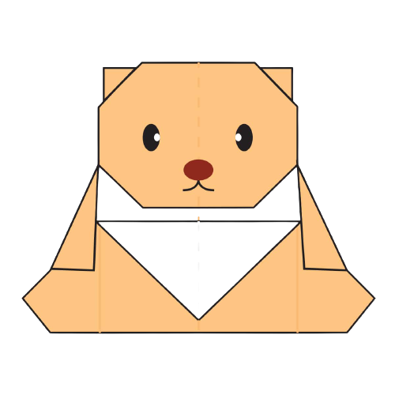
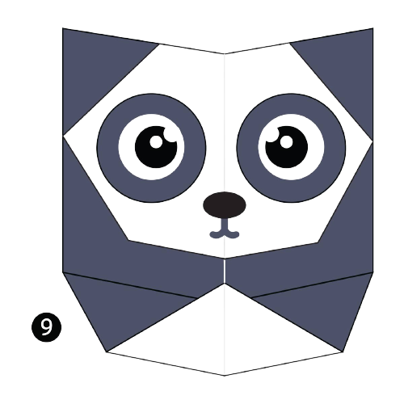
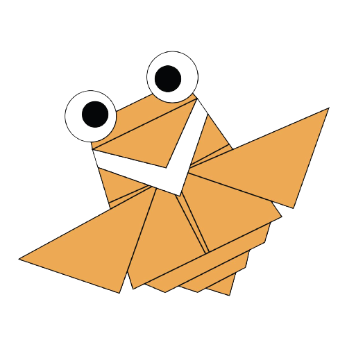

All Crafts are Simple Try it.
Origami Designs
Click on the images to know how to make them !
About me

Interesting Facts About Chameleon
- Chameleon are reptiles that are part of the iguana suborder.
- Changing skin colour is an important part of communication among chameleons.
- most chameleons have a prehensile tail that they use to wrap around tree branches.

Interesting Facts About Pigeon
- Pigeons are incredibly complex and intelligent animals.
- Pigeons are renowned for their outstanding navigational abilities.
- Pigeons have excellent hearing abilities.

Interesting Facts About Camel
- Camels have thick lips which let them forage for thorny plants other animals can't eat .
- Camels have three sets of eyelids and two rows of eyelashes to keep sand out of there eyes .
- There are two types of Camels:1.humped or dromedary camels and 2.humped Bactrian camels.

Interesting Facts About Teddy-bear
- The term bear-hug was first recorded in 1846.
- The Oxford English Dictionary dates the first use of the term teddy bear to 1906.
- The teddy Bear's picnic song was originally called the Teddy bear Two Step.

Interesting Facts About Pandas
- Pandas go from pink to white and black(or brown).
- Pandas are"lazy" -- eating and sleeping make their day.
- An adult can eat 12-38 kilos of bamboo per day .

Interesting Facts About Cicada
- Cicadas can survive ahuge fall as babies,or nymphs.
- Most have red-orange eyes.
- Their short adult life is not unusual for bugs.